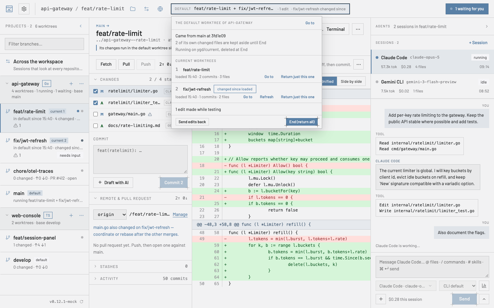

Przewodnik użytkownika
Wszystko, czego potrzebujesz na pierwsze popołudnie z ygd-editor, prostymi słowami. Dziesięć minut czytania, a do każdej sekcji możesz wrócić z listy.
Pomysł w jedną minutę
Git worktree to drugi folder tego samego repozytorium, przełączony na inną gałąź. Zamiast przełączać gałęzie w jednym folderze — i za każdym razem robić stash, przebudowywać i tracić wątek — masz jeden folder na zadanie.
ygd-editor jest zbudowany wokół tego: lewy panel wyświetla listę twoich worktree, środkowy pokazuje, co się zmieniło w wybranym, a prawy uruchamia w nim agenta AI. Dwóch agentów przy dwóch zadaniach pracuje w dwóch folderach i nigdy się nie zderza. Gdy jeden czeka na odpowiedź, skrzynka w nagłówku ci o tym mówi.

Twoje pierwsze dziesięć minut
- Otwórz repozytorium. Na stronie startowej wybierz Otwórz repozytorium i wskaż folder, w którym już jest git, albo Sklonuj repozytorium z adresem URL z GitHub, GitLab lub dowolnego serwera git. Ostatnie repozytoria zostają na stronie startowej.
- Utwórz worktree. Nowy worktree (⌘N) proponuje nazwę gałęzi na podstawie zadania i folder, w którym ją umieścić; oba możesz zmienić na dowolną konwencję, której używasz. Git nie pozwala na spacje w nazwie gałęzi, więc zamieniają się w myślniki, a okno pokazuje wynik, zanim cokolwiek utworzy. Gdzie worktree trafiają na dysku i opcjonalny sugerowany prefiks ustawisz w Ustawienia › Git.
- Uruchom sesję. + Sesja w prawym panelu wybiera agenta i model; domyślny agent to Ustawienia › Domyślny agent. Wpisz, czego chcesz, w kompozytorze.
@dołącza pliki lub kontekst, na przykład bieżący diff,/uruchamia polecenia agenta,#jego skille. ⌘↵ wysyła. - Pozwól mu pracować — albo go zatrzymaj. Transkrypcja pokazuje każde narzędzie, którego agent używa. Gdy potrzebuje zgody na coś, czego wcześniej nie zatwierdzono, sesja przechodzi w stan Czeka na odpowiedź, skrzynka w nagłówku ją zlicza, a ty zezwalasz lub odmawiasz — „Zawsze zezwalaj” zapamiętuje twój wybór dla tego worktree. Zatrzymaj przerywa; wiadomości wpisane w trakcie pracy trafiają do kolejki.
- Przejrzyj zmiany. Zakładka Zmiany wyświetla każdy zmieniony plik razem z tym, kto go zmienił. Kliknij plik, aby zobaczyć diff; zaznacz linie i wybierz Wyjaśnij lub Poproś o zmianę, aby odesłać je do agenta. Ostrzeżenie oznacza pliki, których dotyka też inny worktree tego samego repozytorium.
- Commit, push, otwórz PR. Zaznacz pliki do dodania do stage, napisz wiadomość albo Napisz z AI, Commit. Push ustawia upstream; Otwórz pull request wypełnia tytuł, opis (napisany na podstawie diffu, jeśli chcesz), flagę draft, recenzentów i etykiety, po czym przekazuje sprawę do
ghlubglab. Karta worktree pokazuje wtedy PR i jego checki.

Na co dzień
Główny worktree — folder, z którego otworzono repozytorium — jest na liście razem z pozostałymi i to od niego odgałęziają się nowe worktree. Wybierz go i kliknij nazwę jego gałęzi w nagłówku: rozwinie się pole wyszukiwania ze wszystkimi gałęziami — twoimi albo takimi, które istnieją tylko na zdalnym repozytorium i które pobierze jako nową gałąź śledzącą. Pisz, aby zawęzić listę, strzałki i Enter, aby się przełączyć. Gałąź, którą ma już inny worktree, jest na liście, ale wyszarzona, bo git pozwala na jedną gałąź w jednym worktree naraz.
Aktualizuj z bazy na worktree robi fetch i rebase na gałęzi bazowej; konflikty zatrzymują proces z listą plików, rozwiązujesz je, dodajesz do stage i Kontynuuj. Fetch odświeża liczniki przed/za. Zakładka Terminal to prawdziwa powłoka w folderze worktree; Aktywność to oś czasu tego, co się tam działo — commity, pushe, sesje — i przetrwa restarty.
Przekazywanie. Sesję można przenieść do innego worktree z jej menu, razem z transkrypcją, gdy zorientujesz się, że praca należy do innej gałęzi.
Usunięcie worktree kończy jego sesje, archiwizuje ich logi i zapomina jego reguły uprawnień; gałąź zostaje, chyba że ją usuniesz. Ustawienia › Git mogą same usunąć worktree, gdy jego PR zostanie scalony.
Wiele repozytoriów. Otwórz, ile chcesz; nagłówek przełącza między nimi, a skrzynka zlicza oczekujące sesje ze wszystkich.
Praca z kilkoma repozytoriami: przestrzenie robocze
Przestrzeń robocza to nazwany zestaw folderów, które aplikacja trzyma otwarte razem. Gateway, konsola webowa i folder z notatkami to często jeden kawałek pracy, a pytanie o jeden z nich zwykle znajduje odpowiedź w innym — przestrzeń robocza to sposób, by powiedzieć aplikacji, że należą do siebie. Tworzenie. Otwórz drugie repozytorium, gdy jedno jest już otwarte, a aplikacja zapyta, gdzie je umieścić: dodać do tego, nad czym pracujesz, utworzyć nową przestrzeń roboczą z obydwoma albo otworzyć osobno. Escape oznacza „osobno”. Możesz też utworzyć przestrzeń ze strony startowej przez Nowa przestrzeń robocza, a foldery dodawać i usuwać później przyciskiem Przestrzenie robocze w nagłówku. Usunięcie folderu z przestrzeni roboczej nigdy niczego nie kasuje — zmienia się tylko zestaw.Z VS Code. Jeśli twój zespół ma już plik
Tworzenie. Otwórz drugie repozytorium, gdy jedno jest już otwarte, a aplikacja zapyta, gdzie je umieścić: dodać do tego, nad czym pracujesz, utworzyć nową przestrzeń roboczą z obydwoma albo otworzyć osobno. Escape oznacza „osobno”. Możesz też utworzyć przestrzeń ze strony startowej przez Nowa przestrzeń robocza, a foldery dodawać i usuwać później przyciskiem Przestrzenie robocze w nagłówku. Usunięcie folderu z przestrzeni roboczej nigdy niczego nie kasuje — zmienia się tylko zestaw.Z VS Code. Jeśli twój zespół ma już plik .code-workspace, Otwórz plik przestrzeni roboczej… go wczyta: te same foldery, w tej samej kolejności, nazwane tak, jak nazywa je VS Code. Komentarze i końcowe przecinki w pliku nie przeszkadzają. Foldery, które nie są repozytoriami git, zostają — po prostu nie mają worktree — a o folderze, który zniknął, aplikacja informuje, zamiast po cichu go pominąć. Zapisz do pliku zapisuje go z powrotem, nie ruszając części, których aplikacja nie używa, więc ten sam plik dalej działa w obu narzędziach.Co pokazuje pasek boczny. Worktree pogrupowane według repozytorium, każda grupa zwijana, a filtr dopasowuje nazwę gałęzi lub repozytorium, więc znajdziesz gałąź bez pamiętania, gdzie mieszka. Zwinięta grupa nadal pokazuje, co w niej działa, i nadal mówi, gdy jakaś sesja czeka. Przy jednym repozytorium grup nie ma wcale.Co widzą agenci. Sesja nadal działa w swoim worktree — tam należą git i każda ścieżka względna — ale może też czytać pozostałe foldery przestrzeni roboczej, więc na „gdzie trafia to wywołanie?” da się odpowiedzieć z obu stron. Sesja, która tylko czyta, nadal może tylko czytać, wszędzie. Nad grupami jest też wiersz W całej przestrzeni roboczej, dla sesji, które nie należą do żadnego worktree: im zadawaj pytania obejmujące cały stack. Nie mają gałęzi, zmian ani terminala, bo to należy do worktree.Ustawienia. Teraz trzy poziomy: Globalne, przestrzeń robocza, potem pojedyncze repozytorium. Domyślny agent, preset uprawnień i gałąź bazowa są zwykle cechą całego stacku, a nie każdego repozytorium z osobna, więc ustaw je raz w przestrzeni roboczej; repozytorium, które potrzebuje czegoś innego, nadal może je nadpisać. Selektor zakresu w Ustawieniach wybiera poziom, a sekcja, która nie nadpisuje, mówi, skąd biorą się jej wartości.Aplikacja pamięta każdą przestrzeń roboczą osobno: wróć do jednego z nich i wylądujesz w repozytorium, worktree i układzie paneli, które były otwarte przy wyjściu.
Testowanie worktree w domyślnym
Miejscem do wypróbowania zmiany jest folder samego repozytorium — domyślny worktree — bo tam są już node_modules, .env, pamięć podręczna budowania i działający serwer deweloperski. Praca odbywa się w pozostałych worktree. Ustaw jako bieżący wnosi jeden z nich do domyślnego worktree: jego commity, to, czego jeszcze nie zacommitował, i jego nowe pliki, na gałęzi domyślnego worktree. Od tej chwili nagłówek na każdym ekranie mówi, co uruchamia domyślny worktree — DOMYŚLNY · feat-a + feat-b · 1 edycja — a pasek boczny oznacza worktree domyślny i bieżące.

Zamień wstawia na jego miejsce inny worktree. Dodaj nakłada kolejny, żeby wypróbować dwie zmiany razem; gdzie oba dotykają tych samych linii, wczytywanie zatrzymuje się na konflikcie w domyślnym worktree, a dla każdego pliku zostawiasz stronę domyślną, bierzesz przychodzącą albo edytujesz go i oznaczasz jako rozwiązany — potem Kontynuuj albo Przerwij, by wrócić do tego, co działało wcześniej.Poprawki zrobione podczas testów wracają do domu. Jeśli ty — albo agent w domyślnym worktree — poprawisz coś podczas próby, Odeślij edycje zwraca to do worktree, do którego należy, jako niezacommitowane zmiany do przejrzenia i zacommitowania tam; Cofnij odwraca to aż do następnego kroku. O plik należący do kilku bieżących worktree albo do żadnego aplikacja pyta, zamiast zgadywać. Zamień, Dodaj, Odśwież i Zakończ najpierw odsyłają edycje, więc nic zrobionego w domyślnym worktree nie przepada.Zakończ oddaje domyślny worktree dokładnie w takim stanie, w jakim był: jego gałąź i jego własne zmiany, dodane do indeksu i nie. Każdy krok najpierw otwiera krótki podgląd: co wchodzi, co czeka z boku, które pliki weszłyby w konflikt i co blokuje go teraz, razem z wyjściem. Znajdziesz je w menu··· worktree, pod prawym przyciskiem w pasku bocznym, w pasku nagłówka i pod ⌘⇧D / ⌘⇧E.Ustawienia › Git mogą same odświeżać bieżący worktree, gdy jego agent dalej pracuje, i uruchamiać polecenie po każdym wczytaniu — na przykład pnpm install, gdy zmienił się pnpm-lock.yaml — w terminalu domyślnego worktree, gdzie je widzisz. Twój git stash nigdy nie jest ruszany. Wymaga git 2.40 lub nowszego.
Agenci i dostawcy
ygd-editor sam nie rozmawia z żadną usługą AI. Uruchamia narzędzia wiersza poleceń, które już masz — Claude Code, Codex, Gemini CLI — z twoimi własnymi kontami, więc zużycie, rozliczenia i warunki dotyczące danych są dokładnie te, które obowiązują cię u tych dostawców.
Ustawienia › Dostawcy AI łączą każdego dostawcę z twoim własnym kontem: Połącz otwiera stronę logowania dostawcy w przeglądarce, a karta pokazuje potem konto, plan oraz Zmień konto / Odłącz / Testuj połączenie. Codex i Gemini CLI aplikacja pobiera, gdy wybierzesz je po raz pierwszy — karta podaje wersję i rozmiar, pokazuje postęp, a Usuń pobrane znów je usuwa; jeśli masz zainstalowaną własną kopię, aplikacja używa właśnie jej. Licencja Claude Code nie pozwala go dołączyć, więc jego karta oferuje Zainstaluj Claude Code, co uruchamia oficjalny instalator Anthropic w terminalu na karcie, do twojego folderu domowego, bez hasła administratora. Domyślny agent i model oraz preset uprawnień mogą się różnić dla każdego repozytorium.
Uprawnienia
Agenci pytają, zanim zrobią coś, czego wcześniej nie zatwierdzono. Ustawienia › Uprawnienia mają trzy presety — ścisły (tylko odczyt), zrównoważony (odczyt i edycja plików, pytanie o wszystko inne) i yolo (dodatkowo uruchamianie poleceń, dostęp do sieci i push) — plus osobne przełączniki dla odczytu, edycji, uruchamiania poleceń, dostępu do sieci, pusha i usuwania. Niezależnie od presetu agent nigdy nie usuwa bez pytania, chyba że to włączysz.
Gdy przychodzi prośba, Zatwierdź i Odmów odpowiadają jednorazowo; Zawsze zezwalaj zapamiętuje to narzędzie dla tego worktree, a reguła znika razem z worktree.
Powiadomienia, skrzynka i budżet
Ustawienia › Powiadomienia decydują, kiedy aplikacja da ci znać: gdy sesja czeka, gdy jakaś się skończy, gdy zmienią się checki pull requesta. Powiadomienia pokazują się tylko wtedy, gdy okno nie jest na pierwszym planie, kliknięcie w jedno z nich przenosi do sesji, a plakietka w Docku lub na pasku zadań może zliczać oczekujące sesje.
Pasek budżetu na dole lewego panelu to dzisiejsze rzeczywiste wydatki we wszystkich sesjach, wzięte z raportów zużycia samych agentów. Ustawienia › Budżet ustawiają limit dzienny i limit na sesję, próg ostrzeżenia oraz to, czy sesje mają się wstrzymywać po osiągnięciu limitu.
Ustawienia
Ustawienia (⌘,) są pogrupowane tematycznie. Wygląd ustawia motyw, kolor akcentu, gęstość i czcionki; Język przełącza interfejs między angielskim, hiszpańskim, włoskim, polskim, francuskim, niemieckim i tureckim. Kilka sekcji ma plakietkę na repo: z repozytorium wybranym u góry możesz je nadpisać tylko dla tego repozytorium.
Wszystko zapisuje się automatycznie do settings.json w folderze aplikacji w twoim katalogu domowym; Otwórz settings.json edytuje surowy plik z walidacją, a nagłówek pokazuje, kiedy został ostatnio zapisany.

Aktualizacje
Krótko po uruchomieniu aplikacja sprawdza wydania na tej stronie, pobiera nową wersję w tle i proponuje Uruchom ponownie, aby zaktualizować. Ustawienia › Powiadomienia mają przełącznik Proponuj aktualizacje, przycisk Sprawdź aktualizacje z godziną ostatniego sprawdzenia oraz Instaluj aktualizacje automatycznie: gdy jest włączony, pobrana aktualizacja sama restartuje aplikację po 15-sekundowym odliczaniu, które możesz anulować — tylko gdy żadna sesja nie działa ani nie czeka; w przeciwnym razie instaluje się przy wyjściu. Pierwsze uruchomienie po aktualizacji mówi, jaką masz wersję, i linkuje do listy zmian.
Skróty klawiszowe
| ⌘O | Otwórz repozytorium |
| ⇧⌘C | Sklonuj repozytorium |
| ⌘N | Nowy worktree |
| ⌘, | Ustawienia |
| ⌘↵ | Wyślij wiadomość |
W Windows i Linux czytaj ⌘ jako Ctrl. Każdy skrót można zmienić w Ustawienia › Skróty klawiszowe.
Gdy coś pójdzie nie tak
macOS mówi, że nie mógł sprawdzić aplikacji (Przenieś do Kosza / Gotowe). Kliknij Gotowe, potem Ustawienia systemowe › Prywatność i ochrona › przewiń do sekcji Ochrona › Otwórz mimo to i potwierdź hasłem. W macOS 14 lub starszym prawy przycisk › Otwórz robi to w jednym kroku. Jeśli nadal odmawia, w Terminalu: xattr -d com.apple.quarantine /Applications/ygd-editor.app. Jeśli mówi, że aplikacja jest uszkodzona, pobrany plik jest uszkodzony: pobierz go ponownie i porównaj z SHA256SUMS.txt.
Jak w ogóle uniknąć ostrzeżenia. Zainstaluj z Terminala: curl -fsSL https://mhguitarte.github.io/ygd-editor/install.sh | bash. Sprawdza pobrany plik tak, jak zrobiłby to macOS, i umieszcza aplikację w folderze Aplikacje; więcej na stronie pobierania.
Windows blokuje instalator. SmartScreen › Więcej informacji › Uruchom mimo to. Wydawca powinien brzmieć ygd-editor release signing.
AppImage się nie uruchamia. Uruchom go z --appimage-extract-and-run albo zainstaluj libfuse2.
Dostawca pokazuje „Nie zainstalowano”. Codex i Gemini CLI są pobierane na żądanie: kliknij Pobierz na karcie; jeśli pobieranie się nie uda, karta mówi dlaczego (brak sieci albo plik, który nie zgadzał się z sumą kontrolną i został odrzucony). W przypadku Claude Code kliknij Zainstaluj Claude Code na jego karcie; jeśli to twoja własna instalacja, otwórz terminal, sprawdź, czy claude --version działa, a potem Ustawienia › Dostawcy AI › Skanuj ponownie.
Błędy gita. Aplikacja wyjaśnia typowe w jednym zdaniu — dane logowania, zdalne repozytorium, które poszło dalej, plik blokady, niezacommitowane zmiany, konflikty — a pełne wyjście trzyma w terminalu worktree.
Nie pojawia się żadna aktualizacja. Sprawdź Ustawienia › Powiadomienia › Proponuj aktualizacje, potem Sprawdź aktualizacje; aplikacja musi mieć dostęp do github.com.
Cokolwiek innego: zgłoś issue, opisując swoje kroki, oczekiwany wynik i to, co się stało.
Prywatność i bezpieczeństwo
Wszystko działa na twoim komputerze. Sama aplikacja łączy się z internetem w jednym celu: sprawdza wydania na tej stronie w poszukiwaniu aktualizacji. Agenci rozmawiają ze swoimi dostawcami przez twoje konta; git rozmawia z twoimi zdalnymi repozytoriami przez twoje dane logowania. Tokeny dostawców, które aplikacja przechowuje, trafiają do pęku kluczy systemu operacyjnego. Interfejs działa w piaskownicy, każde żądanie, które wskazuje ścieżkę, jest sprawdzane względem repozytoriów, które faktycznie otwarto, a żadne polecenie nie jest nigdy budowane z ciągu znaków powłoki.
Aby sprawdzić, czy pobrany plik naprawdę pochodzi od nas, zobacz Czy pobrany plik jest autentyczny? na stronie pobierania.